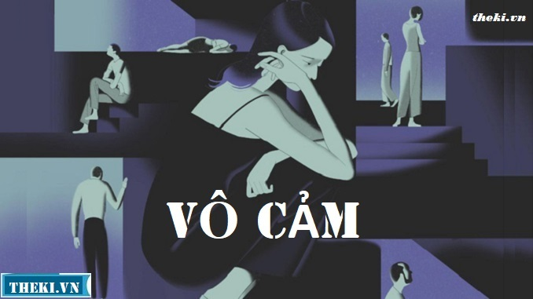
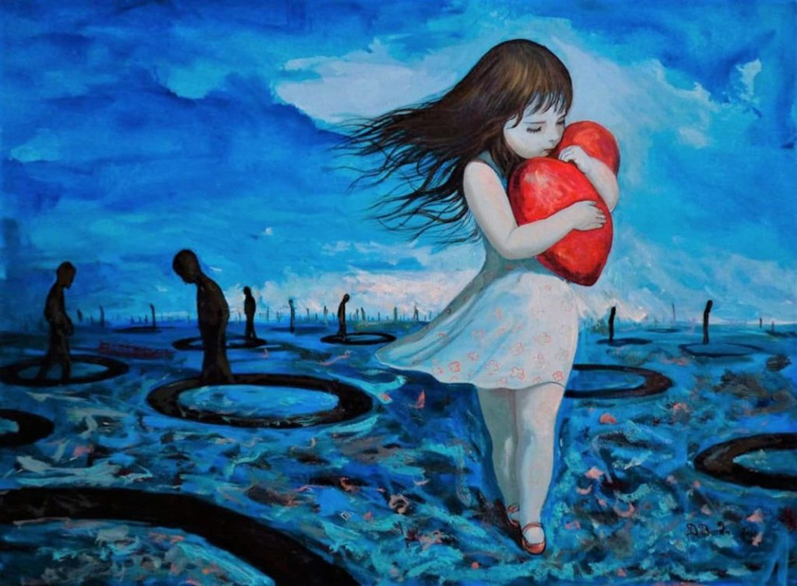

là căn
bệnh về tâm hồn chỉ chỉ thực thực trạng một bộ phận người trong xã hội có thái
độ sống tiêu cực. Trong đó vô tức là không, cảm tức là cảm xúc, bệnh vô cảm là
thái độ thờ ơ, không cảm xúc đối với các sự vật, hiện tượng xung quanh
Biểu hiện rõ nhất của người có lối
sống vô cảm đó là hành động ích kỷ, không quan tâm đến mọi người xung quanh,
thờ ơ trước mọi nỗi đau của xã hội, thậm chí thờ ơ với chính người thân và bản
thân mình.

Những người chủ động chọn cho mình lối sống vô cảm, tự cô
lập bản thân, tách biệt mình khỏi xã hội với những suy nghĩ tiêu cực, ích kỉ.
- Ngày nay, một số người chỉ biết sống
và nghĩ cho riêng mình. Như khi thấy bao người hành khất bên đường, họ không
giúp đỡ, thậm chí còn khinh miệt, dè bỉu chế nhạo trước nỗi bất hạnh của những
mảnh đời đáng thương đó.
- Ở nơi công cộng nhìn thấy kẻ gian
lấy trộm đồ nhưng không lên tiếng mà lẳng lặng bỏ đi, nhìn thấy người khác đánh
rơi đồ nhưng không nhắc mà mặc kệ, khi lên xe thấy người trẻ không nhường chỗ
cho người già nhưng không ý kiến. - Người ta có thể thản nhiên đứng nhìn
cảnh một kẻ mạnh ăn hiếp kẻ yếu; một vụ nữ sinh lột áo, giật tóc, đánh hội
đồng; một vụ làm nhục người khác… như xem một màn kịch, lấy điện thoại ra quay
rồi tung lên mạng. - Quay lưng ngoảnh mặt trước tình cảnh
đau thương của đồng bào bị thiên tai, bão lụt, trước số phận bất hạnh của hàng
ngàn trẻ thơ mồ côi, người già không nơi nương tựa

Sự tác động của xã hội, của đám đông vào tâm lí của họ, sự
thiếu quan tâm của gia đình, người thân khiến cho họ trở nên trơ lì về cảm xúc.